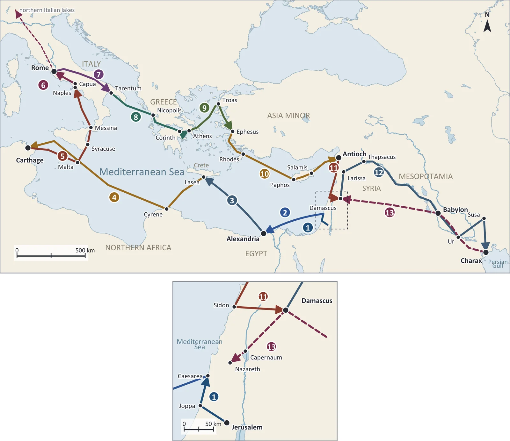
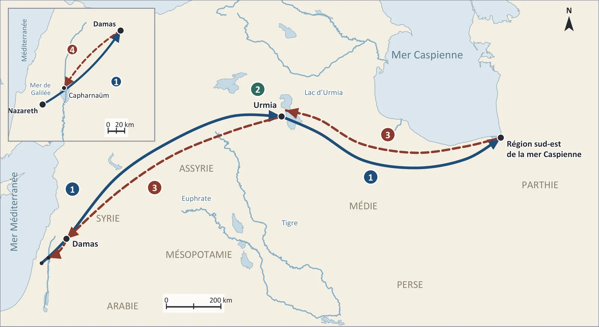
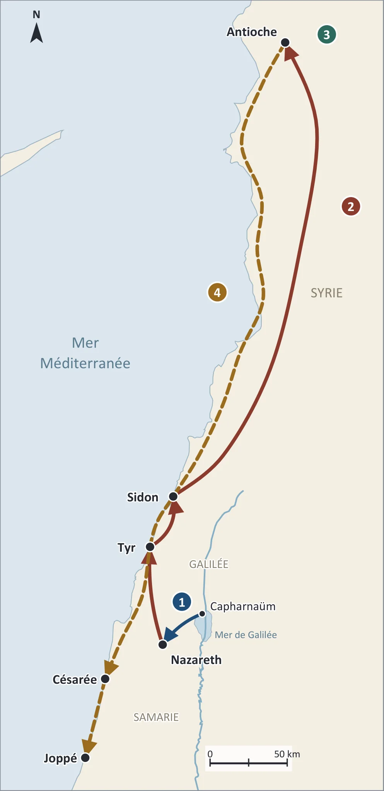
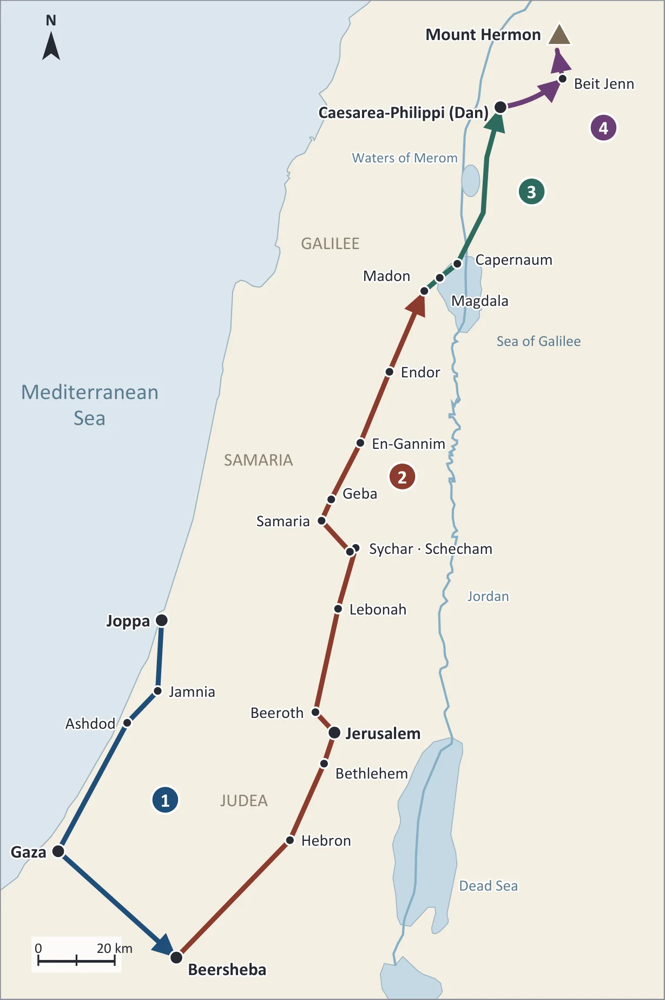
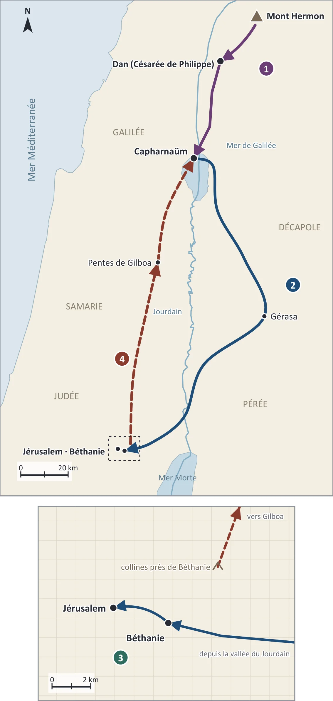

Partie II Premiers voyages et enseignements
Fascicules 130–134
Fascicule 130Sur le chemin de Romeavril de l’an 22
| Évènement | Livre d’Urantia | Bible |
|---|---|---|
| Carte 13Le voyage à Rome, en Grèce et en Mésopotamieavril de l’an 22 – décembre de l’an 23 | ||
| Le début du voyage de deux ans vers RomeCarte 13-① De Jérusalem à Césarée par JoppéCarte 13-⑧ Par Nicopolis et Corinthe jusqu’à AthènesCarte 13-⑨ Par Troas jusqu’à ÉphèseCarte 13-⑫ En caravane jusqu’en Mésopotamie | 130:0.1–7 | Aucun |
| Le 26 avril de l’an 22, Jésus quitta Jérusalem avec Gonod et son fils Ganid, venus de l’Inde, voyageant par Joppé, Césarée, Alexandrie, Carthage, Rome, Corinthe, Éphèse et bien d’autres lieux, jusqu’à ce qu’il se sépare d’eux à Charax le 10 décembre de l’an 23. Jésus instruisait Ganid et servait d’interprète à Gonod. | ||
| 1. À Joppé — discours sur Jonas | 130:1.1–6 | Aucun |
| À Joppé, Jésus rencontra Gadiah, un interprète philistin qui travaillait pour Simon le tanneur. Quand Gadiah l’interrogea sur Jonas et le grand poisson, Jésus répondit en le mettant en garde contre la fuite devant le devoir. Sur le bien et le mal, il enseigna que Dieu ne crée pas le mal ; le mal résulte de choix immatures. | ||
| 2. À Césarée | 130:2.1–10 | Aucun |
| Pendant qu’on remplaçait une rame-gouvernail brisée, Jésus séjourna à Césarée, s’entretenant avec un marchand de Mongolie et exhortant un jeune Grec, Anaxande, à vaincre par la bonté son contremaitre injuste. Il expliqua à Ganid la différence entre la volonté de Dieu et la volonté de l’homme, et qu’un chien n’a pas de nature spirituelle. | ||
| 3. À AlexandrieCarte 13-② Vers Alexandrie | 130:3.1–10 | Aucun |
| À Alexandrie, Jésus et Ganid virent le phare de Pharos et passèrent chaque jour du temps dans la plus grande bibliothèque et le plus grand musée du monde. Sous la direction de Jésus, Ganid commença à rassembler les enseignements des religions du monde qui reconnaissaient une Déité Universelle. Ils ne rencontrèrent pas Philon, qui était malade. | ||
| 4. Discours sur la réalitéCarte 13-③ Vers Lasaïa en Crète | 130:4.1–15 | Aucun |
| La veille de leur départ d’Alexandrie, après avoir rencontré un professeur qui donnait des conférences sur Platon, Jésus expliqua à Ganid la nature de la réalité de l’univers. La source de la réalité est l’Infini ; la personnalité conserve son identité au milieu du changement ; et le mal est l’ombre de l’imperfection projetée par un univers fini. | ||
| 5. Dans l’ile de Crète | 130:5.1–4 | Aucun |
| En Crète, les voyageurs se reposèrent et escaladèrent les montagnes, et Jésus eut sa première longue conversation sur la religion avec Gonod. Quand Ganid lui demanda pourquoi il n’enseignait pas en public, Jésus répondit que toute chose doit attendre son heure. À Beaux-Ports, il secourut une jeune esclave que battait un homme ivre. | ||
| 6. Le jeune homme qui avait peurCarte 13-④ Par Cyrène jusqu’à Carthage | 130:6.1–6 | Aucun |
| Dans les montagnes de Crète, Jésus aborda un jeune homme craintif et abattu nommé Fortuné en lui demandant le chemin de Phénix, puis l’exhorta à renaitre comme un homme de foi, de courage et de service. À Cyrène, Jésus et Ganid donnèrent les premiers soins à Rufus, fils de Simon, blessé dans un accident de char à bœufs. | ||
| 7. À Carthage — discours sur le temps et l’espace | 130:7.1–8 | Aucun |
| En route vers Carthage, Jésus parla surtout de questions sociales et politiques et, quand Ganid lui demanda comment se faire des amis, il répondit qu’il faut s’intéresser sincèrement à ses semblables. À Carthage, il eut un long entretien avec un prêtre mithriaque sur l’immortalité, le temps et l’espace. | ||
| 8. Sur le chemin de Naples et de RomeCarte 13-⑤ Par Malte, Syracuse et Messine jusqu’à NaplesCarte 13-⑥ Par Capoue et la Voie Appienne jusqu’à Rome | 130:8.1–6 | Aucun |
| À Malte, Jésus aida Claudus, un jeune homme qui avait envisagé de mettre fin à ses jours, et à Syracuse il aida Ezra, un Juif apostat, à trouver Dieu. À Messine, il encouragea un jeune vendeur de fruits, puis, par Naples et Capoue, le groupe gagna Rome par la Voie Appienne. | ||
Carte 13Le voyage à Rome, en Grèce et en Mésopotamie
avril de l’an 22 – décembre de l’an 23 · Fascicules 130–134

- ①De Jérusalem à Césarée par JoppéDimanche matin 26 avril de l’an 22, avec Gonod et son fils Ganid, venus de l’Inde. À Joppé, il rencontra Gadiah, un interprète philistin ; à Césarée, il aida à fabriquer une nouvelle rame-gouvernail pour le navire. [130:0.1–2; 130:1.1; 130:2.1]
- ②Vers AlexandrieQuand le bateau fut prêt, ils partirent un jour à midi pour Alexandrie en Égypte. [130:3.1]
- ③Vers Lasaïa en CrèteIls se promenèrent dans l’ile et escaladèrent les montagnes. [130:4.12; 130:5.1]
- ④Par Cyrène jusqu’à CarthageDeux jours à Cyrène, où ils donnèrent les premiers soins à un garçon blessé nommé Rufus. [130:6.6; 130:7.1]
- ⑤Par Malte, Syracuse et Messine jusqu’à NaplesÀ Malte, une longue conversation avec un jeune homme nommé Claudus ; une semaine entière à Syracuse ; un jour à Messine. [130:8.1–4]
- ⑥Par Capoue et la Voie Appienne jusqu’à RomeTrois jours à Capoue. Le troisième jour après leur arrivée à Rome, ils parurent devant Tibère. Ils firent cinq excursions au départ de Rome, dont une vers les lacs du nord de l’Italie (tirets fins). [130:8.6; 132:0.1; 132:7.1]
- ⑦À pied par la Voie Appienne jusqu’à TarenteLeurs bagages partirent en avant par convoi de bêtes de somme jusqu’à Tarente, tandis que les trois voyageurs traversaient l’Italie à pied, sans se presser. [133:0.2; 133:1.1]
- ⑧Par Nicopolis et Corinthe jusqu’à AthènesPlusieurs jours à Nicopolis ; à Corinthe, ils rencontrèrent Crispus, le chef de la synagogue. [130:0.3; 133:2.4–5; 133:3.1; 133:5.1]
- ⑨Par Troas jusqu’à ÉphèseD’Athènes par Troas jusqu’à Éphèse, capitale de la province romaine d’Asie. [130:0.3; 133:6.1]
- ⑩Par Rhodes et Chypre jusqu’à AntiocheAprès une escale à Rhodes, ils firent voile vers Chypre, débarquèrent à Paphos et se reposèrent dans les montagnes voisines, puis s’embarquèrent à Salamine pour Antioche en Syrie. [133:7.1–2; 133:7.13; 133:8.1]
- ⑪Par Sidon jusqu’à DamasAprès avoir préparé leurs bagages pour la caravane de chameaux, ils descendirent à Sidon et passèrent de là à Damas. [133:8.4]
- ⑫En caravane jusqu’en MésopotamiePar Thapsacus et Larissa jusqu’à Babylone ; ils visitèrent Ur et d’autres lieux et allèrent par Suse jusqu’à Charax. Le 10 décembre de l’an 23, à Charax, sur le golfe Persique, il dit adieu à Gonod et à Ganid. [130:0.1; 130:0.3; 133:9.1–4]
- ⑬Le retourPar Ur, il retourna à Babylone et se joignit à une caravane du désert en route pour Damas. De Damas, il se rendit à Nazareth, ne s’arrêtant que quelques heures à Capharnaüm pour rendre visite à la famille de Zébédée (tirets). [134:1.1]
Fascicule 131Les religions du mondean 22
| Évènement | Livre d’Urantia | Bible |
|---|---|---|
| (Introduction) | 131:0.1–2 | Aucun |
| À Alexandrie, Ganid employa plus de soixante traducteurs pour recueillir ce que les religions du monde enseignaient sur la relation de Dieu avec l’homme. La plupart de ces enseignements monothéistes provenaient des missionnaires de Melchizédek, et il les classa sous dix rubriques. | ||
| 1. Le cynisme | 131:1.1–9 | Aucun |
| Ganid choisit des passages d’écrits cyniques, qui avaient le mieux conservé les enseignements de Melchizédek. Ils déclarent que Dieu est suprême, le Très-Haut du ciel et de la terre, miséricordieux et présent partout, et que l’homme qui connait Dieu considère tous les hommes comme ses frères et surmonte le mal par le bien. | ||
| 2. Le judaïsme | 131:2.1–13 | Aucun |
| Parmi les documents conservés par les Kénites et modifiés par les Juifs, Jésus et Ganid choisirent des passages déclarant que Dieu est le Seigneur unique qui a créé le ciel et la terre, un berger miséricordieux et juste. Le commandement d’aimer son prochain comme soi-même et les dix commandements y furent inclus. | ||
| 3. Le bouddhisme | 131:3.1–7 | Aucun |
| Ganid fut stupéfait de constater combien le bouddhisme était près d’être une grande religion sans Dieu personnel. Les passages qu’il choisit enseignent que la foi apporte la paix et la vertu, que le mal est le fruit d’une pensée erronée, que les actes apportent une récompense certaine, et qu’il faut se vaincre soi-même et surmonter le mal par le bien. | ||
| 4. L’hindouisme | 131:4.1–8 | Aucun |
| La doctrine monothéiste des missionnaires de Melchizédek s’incorpora dans les enseignements ultérieurs de l’hindouisme. Jésus et Ganid en extrayèrent des passages déclarant que Dieu est l’unique créateur et contrôleur de l’univers des univers, qu’il habite dans l’âme humaine, et que le connaitre brise les liens de la mort. | ||
| 5. Le zoroastrisme | 131:5.1–5 | Aucun |
| Zoroastre fut en contact avec des descendants des missionnaires de Melchizédek et, après le judaïsme, sa religion fut celle qui conserva le plus des enseignements de Salem. Ganid choisit des passages enseignant que toutes choses viennent du Dieu unique de lumière, plein de sagesse et bon, que la repentance et le pardon effacent le péché, et que les justes atteignent l’immortalité. | ||
| 6. Le soudouanisme (le jaïnisme) | 131:6.1–2 | Aucun |
| Le troisième groupe de l’Inde qui préservait l’enseignement de Melchizédek sur le Dieu unique était connu à l’époque sous le nom de soudouanistes, les jaïns. Ils enseignaient que le Seigneur du Ciel est suprême et que la plus grande victoire de l’homme est la conquête de soi, qui se manifeste dans la colère, l’orgueil, la tromperie et la cupidité. | ||
| 7. Le shintoïsme | 131:7.1–3 | Aucun |
| Les documents du shinto, une religion d’Extrême-Orient, n’avaient été déposés que récemment à la bibliothèque d’Alexandrie et montraient eux aussi des traces de l’enseignement de Melchizédek. Ils disent que le Seigneur, créateur du ciel et de la terre, apprécie même la prière du plus pauvre, et que l’orgueil obscurcit Dieu, si bien qu’il faut venir à lui avec un cœur pur. | ||
| 8. Le taoïsme | 131:8.1–6 | Aucun |
| De l’enseignement des messagers de Melchizédek sur le Dieu unique en Chine, c’est le taoïsme qui en conserva le plus. Les passages de Ganid disent que l’Unique Suprême est l’ancêtre vénéré de toutes choses, qu’il nourrit les créatures sans contrainte ; que la vraie bonté est comme l’eau ; et que le bien doit être fait sans penser à une récompense. | ||
| 9. Le confucianisme | 131:9.1–4 | Aucun |
| Même le confucianisme, celle des grandes religions qui reconnait le moins Dieu, portait des traces de monothéisme. Le résumé de Ganid dit que ce que le Ciel décrète est sans erreur, que la bienveillance est le plus grand don du Ciel, que les fautes doivent être promptement avouées et corrigées, et qu’il ne faut pas faire aux autres ce que l’on ne souhaite pas pour soi-même. | ||
| 10. « Notre religion » | 131:10.1–8 | Aucun |
| Ganid consigna la foi à laquelle il était parvenu grâce à l’enseignement de Jésus, en l’appelant notre religion. Elle confesse un seul Dieu, le Père qui est aux cieux, dont l’esprit habite en l’homme ; puisque tous les hommes sont frères, il prend la résolution de faire aux autres ce qu’il voudrait qu’ils lui fassent et d’aimer même ses ennemis. | ||
Fascicule 132Le séjour à Romean 22 – an 23
| Évènement | Livre d’Urantia | Bible |
|---|---|---|
| (Introduction) | 132:0.1–10 | Aucun |
| Le troisième jour de leur séjour à Rome, Jésus et les deux Indiens parurent devant l’empereur Tibère. Pendant près de six mois, Jésus instruisit personnellement trente-deux dirigeants des stoïciens, des cyniques et des cultes à mystères, sans jamais attaquer leurs erreurs, mais en choisissant et en éclairant la vérité contenue dans leurs enseignements ; trente d’entre eux aidèrent plus tard à poser les fondations du christianisme à Rome. | ||
| 1. Les vraies valeurs | 132:1.1–4 | Aucun |
| Jésus s’entretint toute une nuit avec Angamon, chef des stoïciens de Rome. Il enseigna que l’étalon des vraies valeurs doit être cherché dans le monde spirituel, que le progrès matérialiste sans clairvoyance morale met la civilisation en danger, et que les savants et les religionistes devraient servir le progrès humain plutôt que de se combattre. | ||
| 2. Le bien et le mal | 132:2.1–10 | Aucun |
| Répondant à Mardus, chef des cyniques de Rome, Jésus dit que le bien et le mal représentent des niveaux relatifs de la compréhension humaine de l’univers. La bonté est toujours une expérience personnelle en croissance et, si la possibilité du mal est nécessaire au choix moral, le mal effectif ne l’est pas. | ||
| 3. La vérité et la foi | 132:3.1–11 | Aucun |
| Nabon, grand-prêtre du culte mithriaque, chercha à convertir Jésus, mais fut au contraire profondément impressionné par son enseignement sur la vérité et la foi. Jésus dit que la vérité ne peut être définie que par la vie ; la connaissance s’occupe des faits, la sagesse des relations et la vérité des valeurs de réalité, et l’on ne peut posséder la vérité sans la foi. | ||
| 4. Ministère personnel | 132:4.1–8 | Aucun |
| À Rome, Jésus exerça un ministère personnel auprès de plus de cinq-cents personnes de toutes les classes, leur parlant de l’amour du Père céleste. Il s’entretint avec un sénateur, avec le propriétaire d’esclaves Claudius, avec un médecin grec et avec un orateur, et il défendit devant un magistrat un pauvre homme faussement accusé, obtenant sa libération. | ||
| 5. Conseils à l’homme riche | 132:5.1–25 | Aucun |
| Quand un riche Romain présenté par Angamon lui demanda ce qu’il devait faire de sa richesse, Jésus divisa les richesses en dix sources, dont la richesse héritée, découverte, commerciale, provenant d’intérêts et gagnée par le travail, et lui conseilla d’administrer chacune avec justice et équité, en restituant tout gain injustement acquis. Le riche promit de suivre ce conseil. | ||
| 6. Ministère social | 132:6.1–3 | Aucun |
| À Rome, Jésus et Ganid passèrent des heures à rendre un enfant perdu à sa mère et aidèrent une veuve avec cinq enfants, dont le mari était mort dans un accident, en trouvant du travail pour son fils ainé. Quand Gonod le pressa d’écrire un livre, Jésus répondit que sa mission était de vivre une vie. | ||
| 7. Voyages autour de Rome | 132:7.1–9 | Aucun |
| Au cours d’excursions autour de Rome, Jésus expliqua à Ganid que Dieu ne peut être révélé à un homme qui n’a pas faim de vérité. Dans les montagnes de Suisse, il dit à Gonod que Bouddha était un prophète orphelin qui perdit Dieu de vue et, quand Ganid proposa de créer une nouvelle religion, Jésus répondit que la religion ne se fabrique pas. | ||
Fascicule 133Le retour de Romean 23
| Évènement | Livre d’Urantia | Bible |
|---|---|---|
| (Introduction)Carte 13-⑦ À pied par la Voie Appienne jusqu’à Tarente | 133:0.1–3 | Aucun |
| Jésus quitta Rome sans dire au revoir, et ceux qui l’avaient connu formèrent plus tard de petits groupes. Les trois voyageurs gagnèrent Tarente à pied par la Voie Appienne. En chemin, Ganid l’interrogea sur le système des castes de l’Inde, et Jésus répondit que, devant Dieu, tous les mortels sont sur un pied d’égalité. | ||
| 1. Miséricorde et justice | 133:1.1–5 | Aucun |
| Près de Tarente, Jésus secourut un petit garçon que battait un plus grand et maitrisa l’agresseur, mais il retint Ganid quand le jeune homme commença à rosser le coupable. Il expliqua que la miséricorde est l’œuvre de l’individu, tandis que la punition au nom de la justice appartient à la société et au gouvernement, et ils parlèrent aussi de la légitime défense. | ||
| 2. L’embarquement à Tarente | 133:2.1–5 | Aucun |
| Au débarcadère de Tarente, Jésus prit à part un homme qui maltraitait sa femme et le conseilla avec bonté, et l’homme se repentit. Jésus lui dit qu’aimer et chérir sa femme comme une partenaire égale, c’est être semblable à Dieu. Le groupe s’embarqua pour Corinthe en passant par Nicopolis. | ||
| 3. À Corinthe | 133:3.1–12 | Aucun |
| À Corinthe, Jésus eut plus de vingt entretiens avec Crispus, le chef de la synagogue. Un soir, quand Ganid chassa grossièrement deux courtisanes, Jésus lui dit de ne pas les juger et conduisit les femmes à la maison de Justus pour les aider à commencer une vie nouvelle. Beaucoup de ceux qu’il rencontra là rejoignirent plus tard l’église de Paul. | ||
| 4. Travail personnel à Corinthe | 133:4.1–14 | Aucun |
| À Corinthe, Jésus donna des conseils appropriés à beaucoup de gens : un meunier, un centurion romain, un chef mithriaque, un maitre épicurien, un entrepreneur, un juge, la tenancière d’une auberge, un marchand chinois, un voyageur venu de Bretagne, un garçon fugueur et un criminel condamné, chacun selon sa situation. | ||
| 5. À Athènes — discours sur la science | 133:5.1–12 | Aucun |
| À leur auberge d’Athènes, Jésus discuta de science avec un philosophe grec. Il dit que la science s’occupe des énergies physiques et la religion des valeurs éternelles, que la logique et les mathématiques ne peuvent être appliquées telles quelles aux problèmes de la vie, et que les faits et les valeurs sont finalement unifiés dans le Suprême. | ||
| 6. À Éphèse — discours sur l’âme | 133:6.1–7 | Aucun |
| À Éphèse, les voyageurs visitèrent le temple d’Artémis et, après que Ganid eut acheté un petit sanctuaire d’argent, ils parlèrent longuement de l’adoration de choses faites de main d’homme. Quand un philosophe demanda ce qu’est l’âme, Jésus répondit qu’elle est la partie de l’homme qui discerne la vérité et perçoit l’esprit, et qu’elle nait en même temps que l’activité morale. | ||
| 7. Le séjour à Chypre — discours sur le mentalCarte 13-⑩ Par Rhodes et Chypre jusqu’à Antioche | 133:7.1–13 | Aucun |
| Pendant leur repos dans les montagnes de Chypre, Ganid fut soudain pris de fièvre, et Jésus le soigna avec dévouement. Pendant sa convalescence, Ganid l’interrogea sur la conscience supérieure que l’homme a de lui-même, et Jésus expliqua que la conscience de soi est une réalité, et que le mental ne supporte pas une double allégeance, mais qu’il est unifié par une pleine consécration à la volonté du Père. | ||
| 8. À AntiocheCarte 13-⑪ Par Sidon jusqu’à Damas | 133:8.1–4 | Aucun |
| À Antioche, Jésus n’alla pas avec eux aux bosquets de Daphné et, à l’approche de la fin du voyage, il devint méditatif, disant seulement qu’il reviendrait peut-être là un jour. Ganid mit en pratique l’enseignement de Jésus en rendant visite à un compatriote mécontent employé par son père et en lui parlant du Père qui est aux cieux. | ||
| 9. En Mésopotamie | 133:9.1–6 | Aucun |
| De Damas, les voyageurs traversèrent le désert en caravane et visitèrent Ur et Suse ; à Ur, Ganid apprit la différence entre la connaissance, la sagesse et la vérité. Jésus fit ses adieux à Gonod et à Ganid à Charax, et ils n’apprirent jamais que leur maitre Joshua était celui qui devint plus tard Jésus de Nazareth. | ||
Fascicule 134Les années de transitionan 24 – octobre de l’an 25
| Évènement | Livre d’Urantia | Bible |
|---|---|---|
| (Introduction) | 134:0.1–2 | Aucun |
| Après le voyage en Méditerranée, Jésus donna son approbation définitive au plan de naitre en Palestine de parents juifs. Il décida de retourner en Galilée pour y attendre le début de son œuvre d’éducateur public, et d’achever sa vie parmi les Juifs de Palestine, là où elle avait commencé. | ||
| Carte 14Le lac Urmia et le voyage en caravane vers la mer Caspienneavril de l’an 24 – avril de l’an 25 | ||
| 1. La trentième année (an 24)Carte 13-⑬ Le retourCarte 14-① Le voyage en caravane vers la mer Caspienne | 134:1.1–7 | Aucun |
| Revenant de Charax en décembre de l’an 23, Jésus remit à Jacques la petite maison de Capharnaüm que Jean Zébédée avait achetée, puis passa plusieurs semaines à Nazareth. Simon et Jude se marièrent lors d’un double mariage au début de mars de l’an 24 et, après le départ de Jésus comme conducteur de caravane, Marie et Ruth s’installèrent dans la maison de Capharnaüm. | ||
| Carte 15La Syrie et la côte méditerranéenneavril – été de l’an 25 | ||
| 2. Le voyage par caravane à la mer CaspienneCarte 14-③ Le retourCarte 14-④ Vers CapharnaümCarte 15-① De Capharnaüm à Nazareth | 134:2.1–5 | Aucun |
| Le 1er avril de l’an 24, Jésus remplaça un conducteur de caravane tombé malade et mena la caravane par Damas et le lac Urmia jusqu’à la région sud-est de la mer Caspienne. Il entra en contact avec toutes les races survivantes sauf la rouge, et revint à Capharnaüm le 1er avril de l’an 25, où il s’installa chez les Zébédée. | ||
| 3. Les conférences d’UrmiaCarte 14-② Urmia | 134:3.1–8 | Aucun |
| En route vers la mer Caspienne, Jésus prit part à des discussions au temple de la philosophie des religions construit par Cymboyton à Urmia. Au retour, il y resta deux semaines et fit vingt-quatre conférences sur la fraternité des hommes, le plus systématique et le plus formel de tous ses enseignements. | ||
| 4. La souveraineté — divine et humaine | 134:4.1–10 | Aucun |
| Les conférences d’Urmia enseignaient que la fraternité des hommes est fondée sur la paternité de Dieu et que le royaume des cieux est la relation spirituelle entre Dieu et l’homme. La paix religieuse ne peut venir que lorsque toutes les religions renoncent à leur autorité ecclésiastique et à leurs notions de souveraineté religieuse, et reconnaissent Dieu seul comme souverain spirituel. | ||
| 5. La souveraineté politique | 134:5.1–17 | Aucun |
| Reformulé par les médians pour les conditions modernes, cet enseignement soutient que la guerre ne prendra jamais fin tant que les nations s’accrocheront à une souveraineté nationale illimitée. À mesure que la souveraineté évolue de la famille vers l’humanité entière, une paix durable ne viendra que lorsque les nations remettront le pouvoir de faire la guerre à un gouvernement représentatif de l’humanité. | ||
| 6. La loi, la liberté et la souveraineté | 134:6.1–16 | Aucun |
| Cet enseignement soutient que la liberté est un don de la civilisation, rendu possible par l’application de la loi, et que la guerre n’est pas la maladie, mais un symptôme du virus de la souveraineté nationale. Après la mort de Cymboyton, des éducateurs intolérants envoyés par Abner accrurent la confusion, et l’école ferma au bout de cinq ans. | ||
| Carte 16À travers la Palestine jusqu’au mont Hermonété de l’an 25 | ||
| 7. La trente-et-unième année (an 25)Carte 15-② Par Tyr et Sidon jusqu’à AntiocheCarte 15-③ AntiocheCarte 15-④ Le long de la côte jusqu’à Césarée et JoppéCarte 16-① De Joppé à BéershébaCarte 16-② Vers le nord depuis BéershébaCarte 16-③ Vers Césarée de PhilippeCarte 16-④ Six semaines sur le mont Hermon | 134:7.1–7 | Aucun |
| Revenu de la mer Caspienne, Jésus quitta Nazareth à la mi-avril de l’an 25 pour Tyr et Sidon, et vécut plus de deux mois à Antioche. Il descendit ensuite la côte jusqu’à Gaza et Béershéba et, de Béershéba à Dan, fit son dernier périple à travers la Palestine en tant que personne privée. | ||
| Carte 17Du mont Hermon à Jérusalem, puis retour en Galiléefin de l’été de l’an 25 – janvier de l’an 26 | ||
| 8. Le séjour sur le mont HermonCarte 17-① Du mont Hermon à Capharnaüm | 134:8.1–10 | Mt 4:3-11; Mc 1:12-13; Lc 4:1-13 |
| Vers le milieu d’aout de l’an 25, Jésus laissa le garçon Tiglath à Beth-Jenn et passa six semaines seul sur le mont Hermon. Durant la dernière semaine, Satan et Caligastia apparurent et le tentèrent, mais il répondit seulement que la volonté de son Père du Paradis devait prévaloir, et il conquit ainsi la souveraineté de Nébadon.Diffère de la BibleLes Évangiles placent la tentation dans le désert, pendant quarante jours, juste après le baptême, avec trois épreuves : le pain, le pinacle du temple et les royaumes ; le Livre d’Urantia dit qu’elle eut lieu sur le mont Hermon avant le baptême, qu’elle concernait la souveraineté de l’univers, et qualifie de symbolique le récit des Évangiles. | ||
| 9. Le temps d’attenteCarte 17-② Avec Jean jusqu’à JérusalemCarte 17-③ Jérusalem et les collines près de BéthanieCarte 17-④ Par le Gilboa jusqu’à Capharnaüm | 134:9.1–9 | Aucun |
| En descendant de l’Hermon, Jésus se rendit avec Jean Zébédée à Jérusalem pour le jour des propitiations et la fête des Tabernacles, mais il estima que les rites de la propitiation donnaient une image fausse du caractère de son Père. Il construisit ensuite des bateaux avec Jacques à Capharnaüm jusqu’en janvier de l’an 26 ; quand Jean le Baptiste arriva à Pella, Jésus, disant que son heure était venue, alla se faire baptiser. | ||
Carte 14Le lac Urmia et le voyage en caravane vers la mer Caspienne
avril de l’an 24 – avril de l’an 25 · Fascicule 134

- ①Le voyage en caravane vers la mer CaspienneJésus quitta Nazareth le 1er avril de l’an 24 comme conducteur d’une grande caravane, remplaçant son conducteur, qui était tombé gravement malade. Partie de Jérusalem, la caravane passa par Damas et le lac Urmia, puis à travers l’Assyrie, la Médie et la Parthie jusqu’à la région sud-est de la mer Caspienne. Il s’écoula une année entière avant son retour. [134:1.6; 134:2.1–4]
- ②UrmiaÀ l’aller, il s’arrêta plusieurs jours pour se reposer dans la vieille ville persane d’Urmia, sur la rive ouest du lac Urmia. Sur une ile voisine se dressait le temple de la philosophie des religions construit par Cymboyton. [134:3.1–3]
- ③Le retourIl abandonna la direction de la caravane au lac Urmia, y resta un peu plus de deux semaines pour faire les conférences sur « La Fraternité des Hommes », et revint comme passager avec une caravane ultérieure jusqu’à Damas. [134:2.5; 134:3.4–5]
- ④Vers CapharnaümÀ Damas, les propriétaires des chameaux le supplièrent de rester à leur service. Il refusa et continua jusqu’à Capharnaüm, où il arriva le 1er avril de l’an 25. Capharnaüm, et non plus Nazareth, était désormais son foyer ; il y habitait chez les Zébédée. [134:2.5]
Carte 15La Syrie et la côte méditerranéenne
avril – été de l’an 25 · Fascicule 134

- ①De Capharnaüm à NazarethRevenu du voyage vers la mer Caspienne le 1er avril de l’an 25, il fit une brève visite à Capharnaüm et continua jusqu’à Nazareth, où il s’arrêta quelques jours. Il ne lui restait plus qu’un seul voyage hors de Palestine, et ce fut en Syrie. [134:2.5; 134:7.1]
- ②Par Tyr et Sidon jusqu’à AntiocheAu milieu d’avril, il quitta Nazareth pour Tyr. De là, il continua vers le nord, s’attardant quelques jours à Sidon, mais sa destination était Antioche. [134:7.1]
- ③AntiocheIl y vécut plus de deux mois, travaillant, observant, étudiant, rendant visite aux gens et exerçant son ministère ; pendant trois semaines, il travailla comme fabricant de tentes. Il resta plus longtemps à Antioche que dans aucun autre lieu visité au cours de ce voyage. Cette année-là, il fut connu sous divers noms, entre autres celui de scribe de Damas. [134:7.2–3]
- ④Le long de la côte jusqu’à Césarée et JoppéD’Antioche, il descendit vers le sud le long de la côte jusqu’à Césarée, où il s’attarda quelques semaines, puis continua le long de la côte jusqu’à Joppé. [134:7.4]
Carte 16À travers la Palestine jusqu’au mont Hermon
été de l’an 25 · Fascicule 134

- ①De Joppé à BéershébaDe Joppé, il se dirigea vers l’intérieur, passant à Jamnia, Ashdod et Gaza. De Gaza, il prit la piste intérieure vers Béershéba, où il resta une semaine. [134:7.4]
- ②Vers le nord depuis BéershébaSon dernier périple, en tant que personne privée, à travers le cœur de la Palestine. Il s’arrêta à Hébron, Bethléem (où il vit son lieu de naissance), Jérusalem (il ne visita pas Béthanie), Béeroth, Lébona, Sychar, Shéchem, Samarie, Géba, En-Gannim, Endor et Madon. [134:7.5]
- ③Vers Césarée de PhilippeTraversant Magdala et Capharnaüm, il continua vers le nord ; passant à l’est des Eaux de Mérom, il se rendit par Karahta à Dan, ou Césarée de Philippe. Karahta n’est pas indiquée, son emplacement étant inconnu. [134:7.5]
- ④Six semaines sur le mont HermonIl prépara ses provisions et, avec un garçon nommé Tiglath, suivit la route de Damas jusqu’à Beth-Jenn, sur les premières hauteurs du mont Hermon. Un peu avant le milieu d’aout de l’an 25, il y établit son quartier général et fit l’ascension des pentes solitaires de la montagne, vivant seul avec Dieu pendant six semaines (la ligne pointillée s’arrête sur la montagne ; position approximative). [134:7.6–7; 134:8.1]
Carte 17Du mont Hermon à Jérusalem, puis retour en Galilée
fin de l’été de l’an 25 – janvier de l’an 26 · Fascicule 134

- ①Du mont Hermon à CapharnaümEn descendant de la montagne, il rencontra Tiglath qui montait avec des vivres et le fit redescendre. À Dan, il prit congé du garçon en lui donnant l’âne, et continua vers le sud par le même chemin qu’à l’aller, jusqu’à Capharnaüm. [134:8.10]
- ②Avec Jean jusqu’à JérusalemAprès une réunion de famille à Capharnaüm pendant le sabbat, il partit le lendemain avec Jean, fils de Zébédée, passant à l’est du lac, par Gérasa, puis descendant la vallée du Jourdain. Ils passèrent la nuit à Béthanie chez Lazare et ses sœurs, et se rendirent à Jérusalem tôt le lendemain matin. [134:9.1–2]
- ③Jérusalem et les collines près de BéthanieIls passèrent près de trois semaines dans la ville et ses environs et assistèrent aux offices du jour des propitiations ; puis vint la fête des Tabernacles. Au milieu de cette semaine, il prit congé de Jean et passa près d’une semaine seul dans les collines près de Béthanie. [134:9.2–5]
- ④Par le Gilboa jusqu’à CapharnaümSur le chemin du retour, il passa un jour et une nuit seul sur les pentes du Gilboa, près de l’endroit où le roi Saül s’était donné la mort. Le lendemain de son arrivée à Capharnaüm, il se présenta pour travailler au chantier naval de Zébédée, où il travailla jusqu’en janvier de l’année suivante. [134:9.5–6]
← Partie I De la naissance à l’âge d’hommePartie III Jean le Baptiste, la préparation et la formation des apôtres →
Les actes de Jésus dans le Livre d’Urantia — Le Nouveau Testament et le Livre d’Urantia